Détails du Projet
Développement de solutions Python pour la gestion des données scolaires Dans le cadre de mes compétences en Python, j'ai conçu et implémenté des solutions pour la gestion des données scolaires. Ces solutions incluent la manipulation, l'organisation et l'analyse des informations relatives aux élèves, enseignants et résultats académiques. En utilisant des outils tels que Tkinter pour les interfaces graphiques et SQLiteStudio pour la gestion de bases de données, j'ai optimisé le traitement des données et automatisé des processus administratifs, améliorant ainsi l'efficacité et la précision des opérations.
 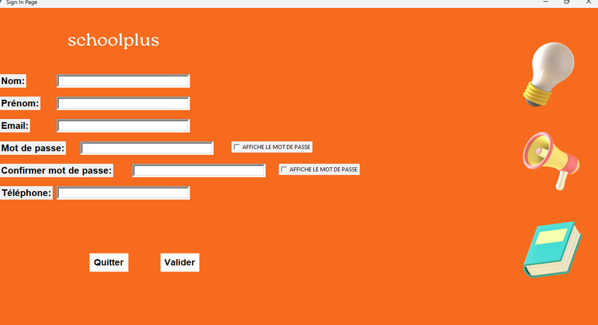
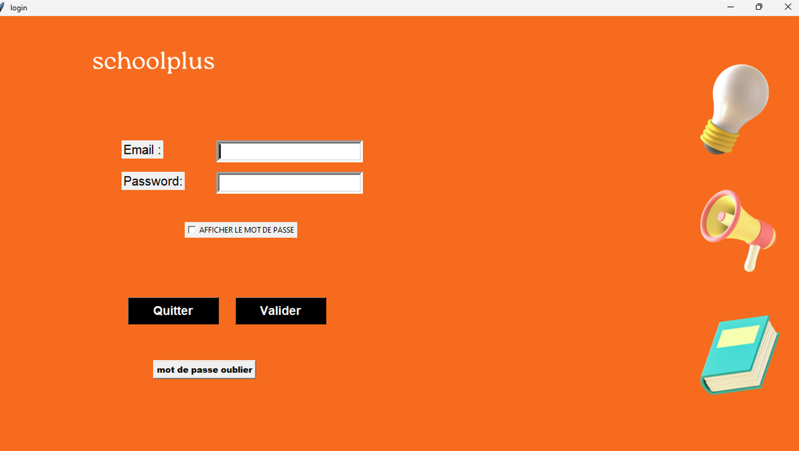
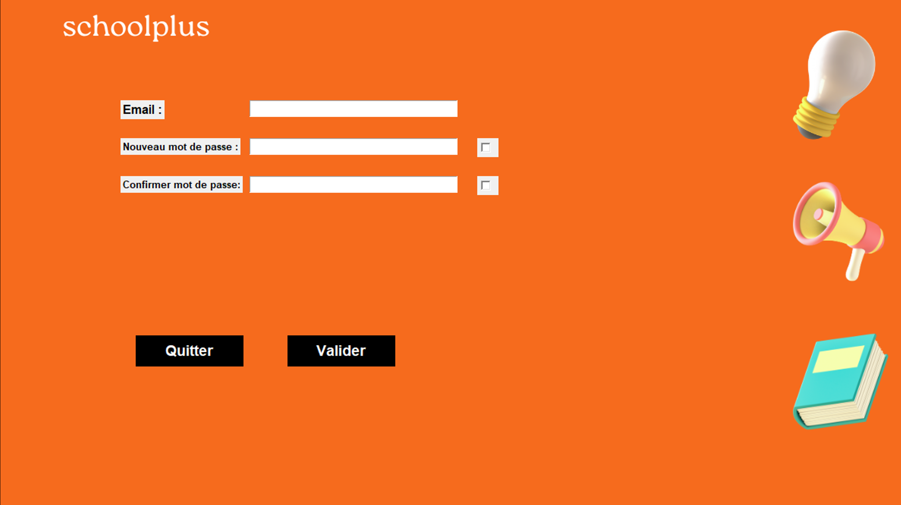
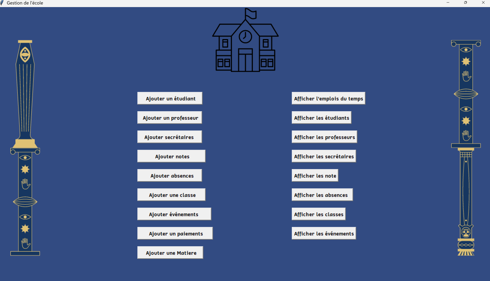
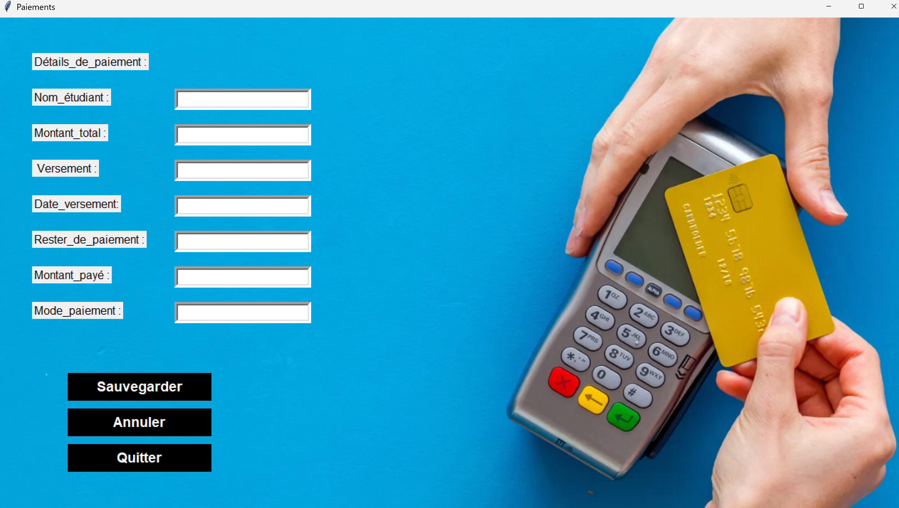
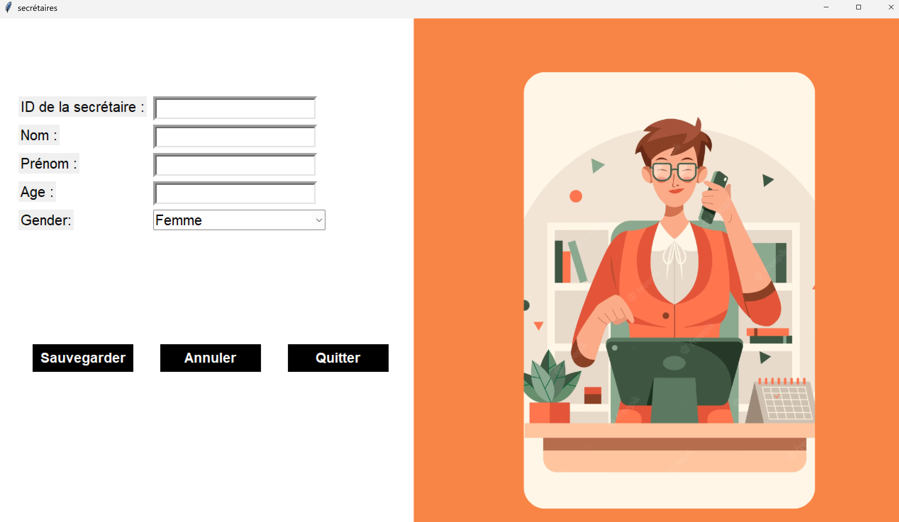
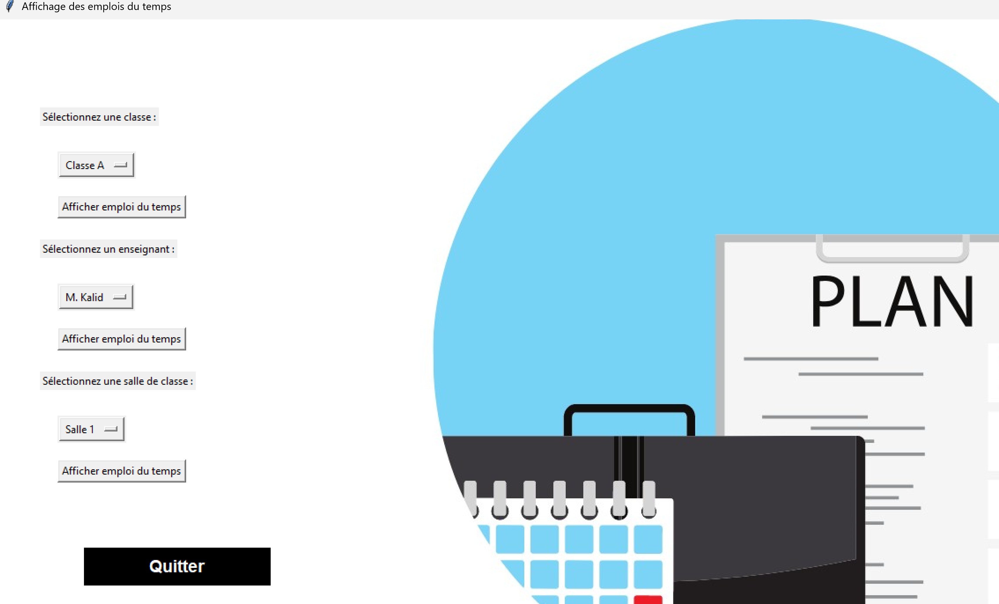
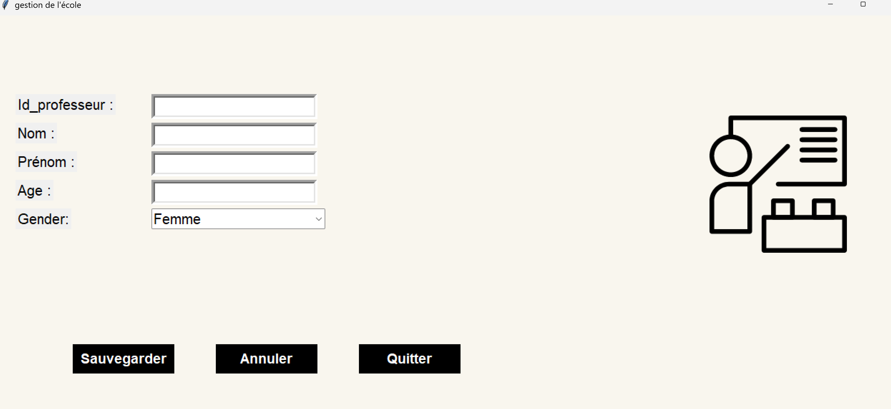
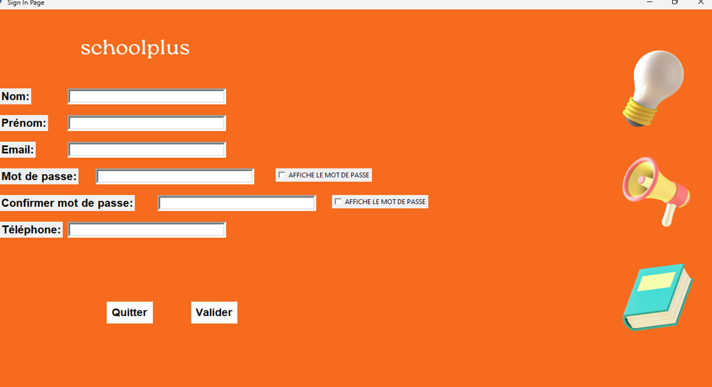
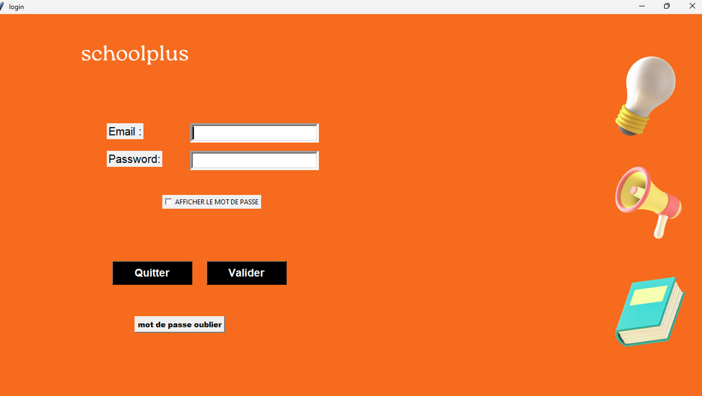
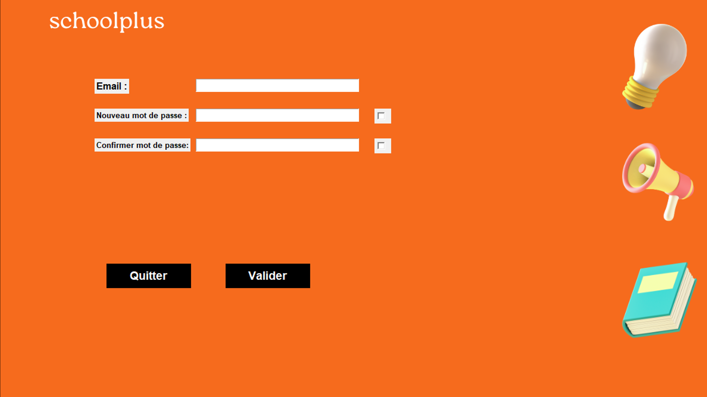
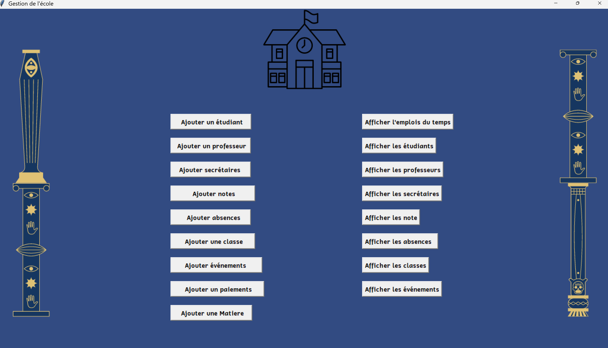
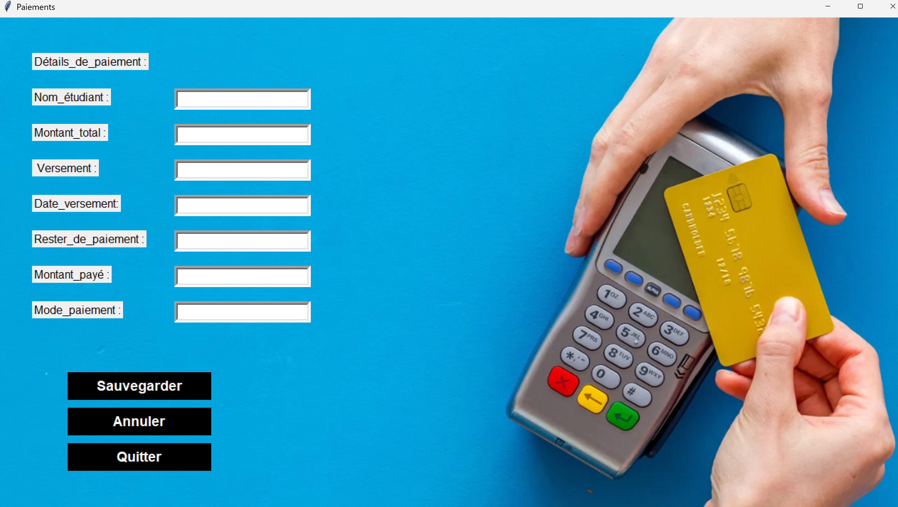
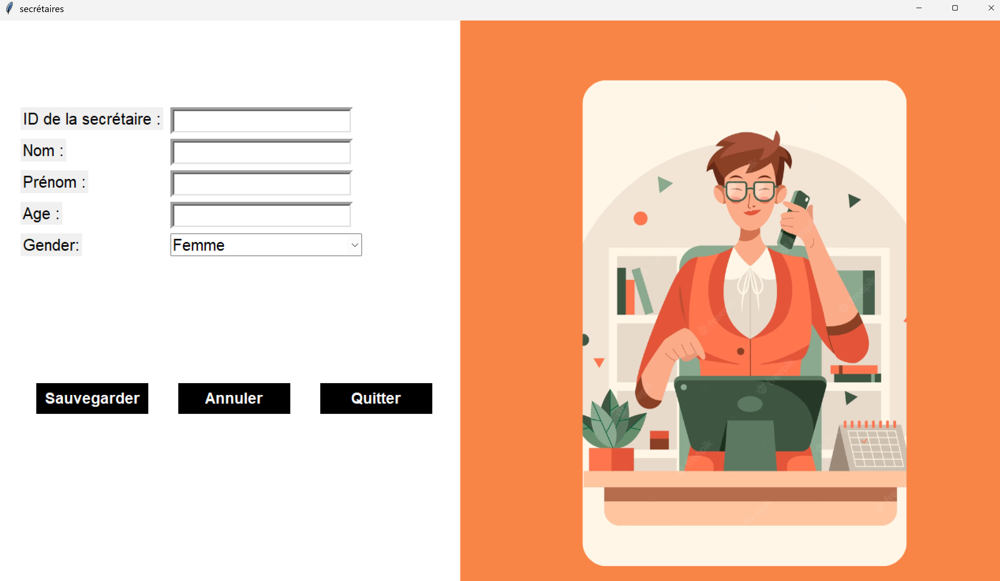
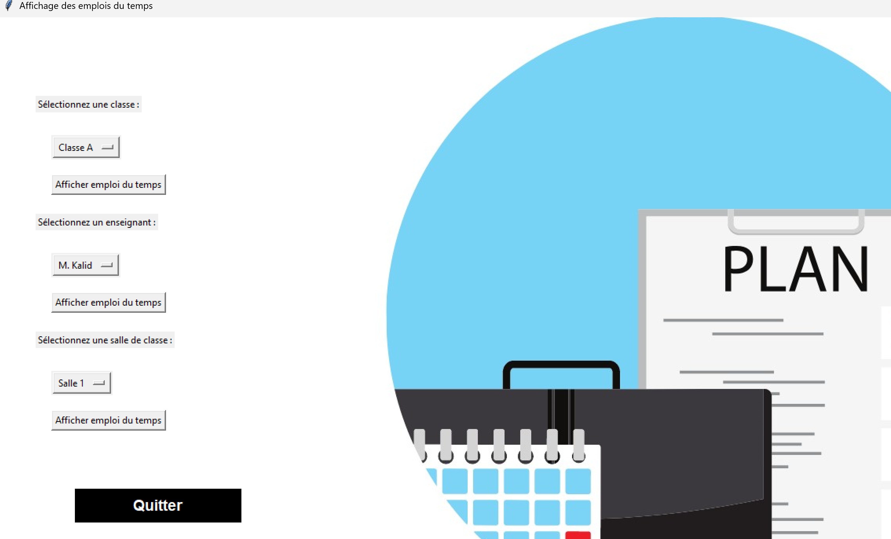
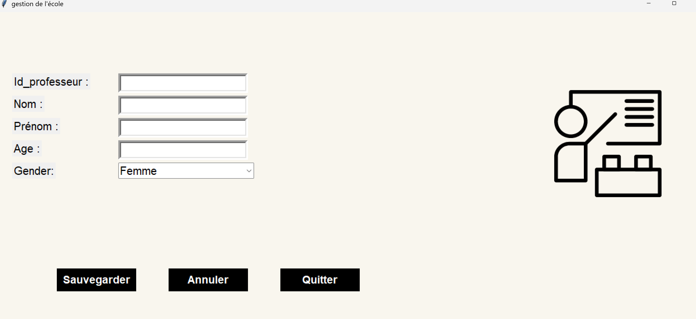
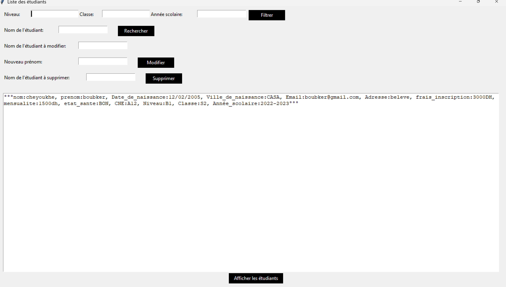
×

- Langages : Python
- Frameworks : Tkinter
- Outils : SQLiteStudio, PyCharm
- Conçu et implémenté des solutions Python pour la gestion des données scolaires.
- Développé des interfaces graphiques intuitives avec Tkinter.
- Optimisé le traitement des données avec SQLiteStudio.